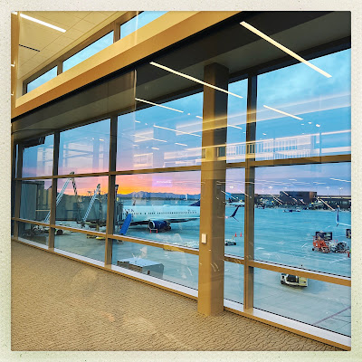

Recovered weblog entry
Airport thoughts
My mind doesn’t just race at airports. It chases every meandering thought down each terminal, back alley, and boutique shop. Every consonant belonging to every cascading word in my mind takes up residence in the expressways of internal expression. And tonight, it’s crushing me into the polished crushed granite tile paving the path toward my gate.
I don’t know that I know how to grieve properly. My brain has erected impenetrable walls and opaque veils between my emotions and my dialogue. My fear is that one day soon, my inability to penetrate these fortifications will cause me to collapse in unexpected ways. My hope is that no one is around when that happens.
Anyway. I am at the airport. These are my words about being at the airport. And here’s a picture of the airport. The end.
